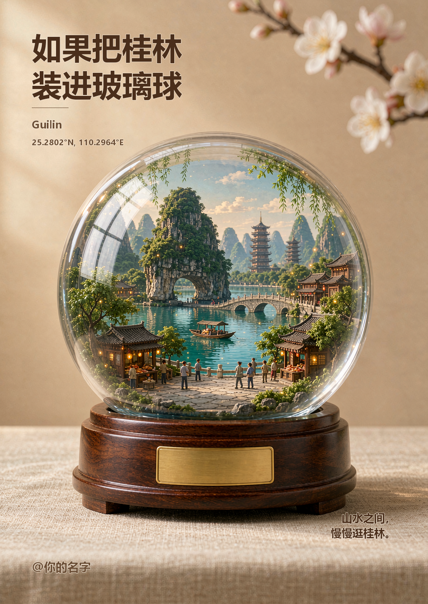
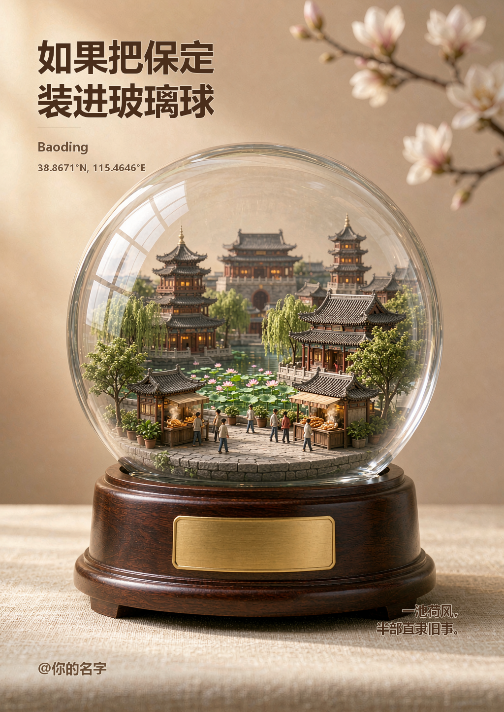

输入一个城市名，自动生成微缩城市水晶球文创海报。透明玻璃球、深胡桃木底座、暖米色背景，中文标题由系统字体绘制，零乱码。
同样的视觉形式，换一座城市就是完全不同的故事。以下两张均为本技能实际生成，1024 × 1443。


内置 40+ 城市档案，含地标、季节、色调、经纬度与短句；未收录城市自动走通用模板。
结构化提示词约束玻璃折射、木底座、微缩全景与留白，并明确禁止画面出现任何文字。
标题、英文名、坐标、文案用系统中文字体后期叠加，避开 AI 中文乱码；同时无痕去除平台水印。
把苏州装进玻璃球
用 city-glass-globe 生成保定
批量生成 北京 上海 西安 的玻璃球海报
换成雪景风格再做一次哈尔滨可选风格：poster（默认）/ snow / night / ink / clean。改文案或署名只需重跑排版脚本，不必重新生图。